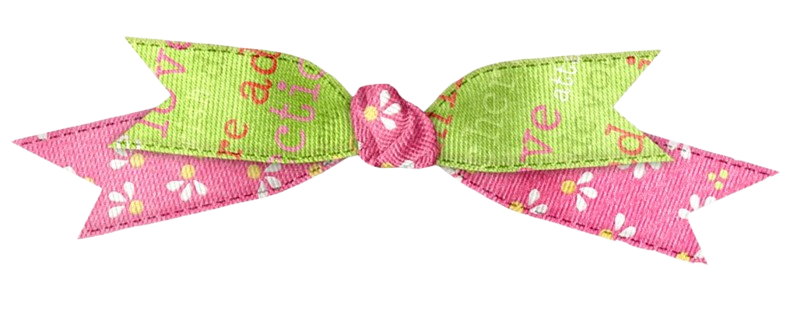
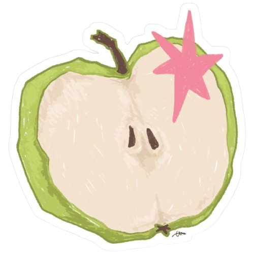
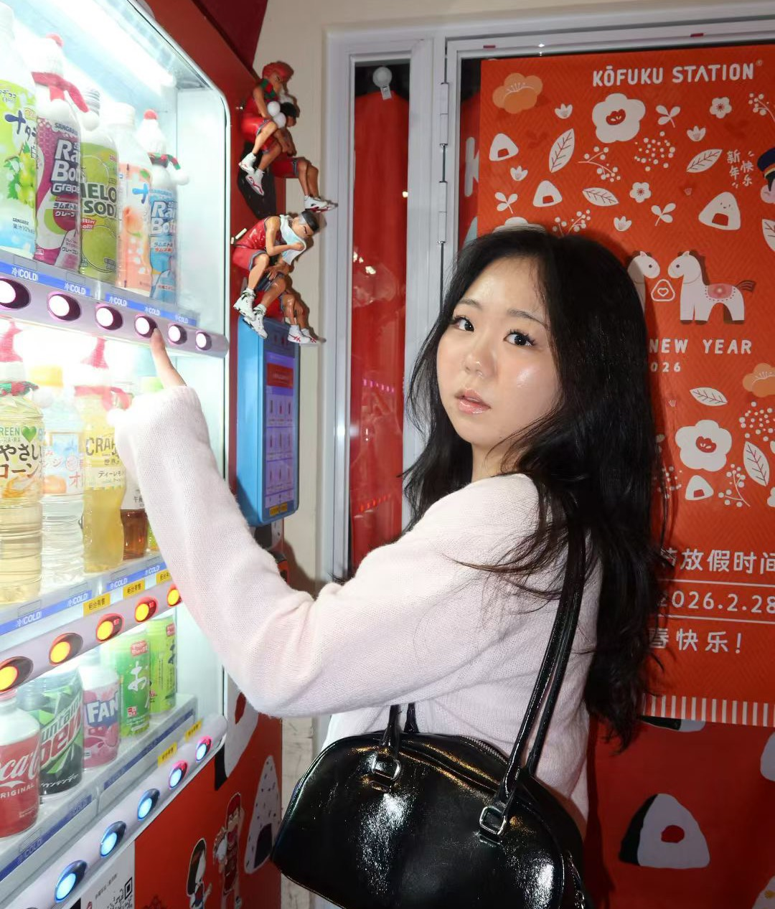
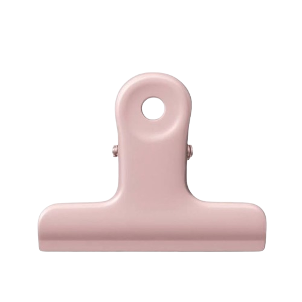
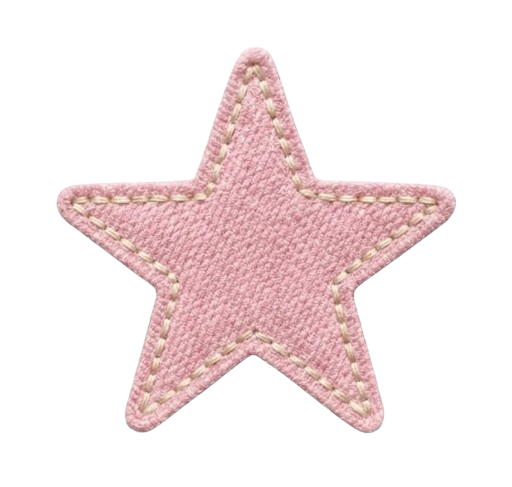
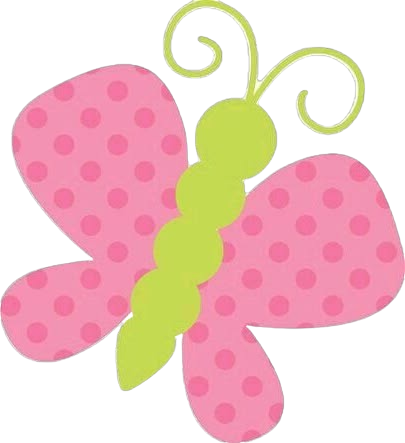
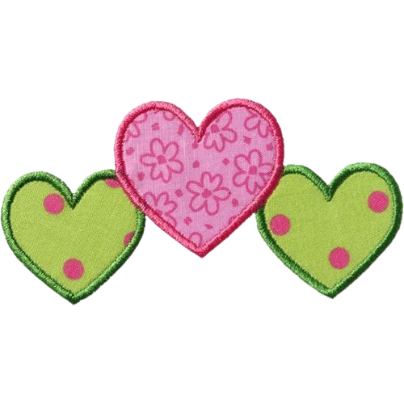
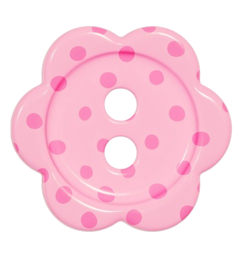
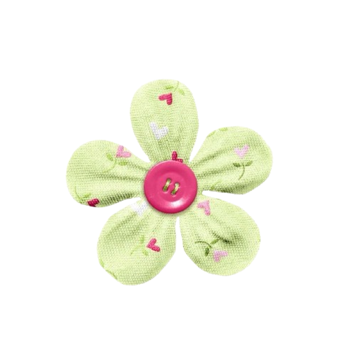

hi, welcome to my
Erdemdelgerekh "Phoebe" Battogtokh
CS @ NYU Shanghai, currently in New York
UB → SH → NYC
xoxo, phoebe ♡



hi, i'm phoebe!
i grew up in Ulaanbaatar, Mongolia, and moved abroad for college. i did all my applications by myself, which still feels kind of crazy.
i spent two years at NYU Shanghai, and now i'm in New York for a year at NYU Tandon. i study computer science because i like building things that people actually use.
when i'm not coding, i'm probably playing chess, doing sudoku, or listening to music.
where i grew up
2 years at NYU Shanghai
study away at NYU Tandon, now!

(click a note!)

NYU Shanghai in New York · 2026
I represent NYU Shanghai students who are studying away in New York.
How a big university actually makes decisions, and how to speak up for a small group of students.
NYU Shanghai · 2026
I talk to students and families who are thinking about NYU Shanghai.
How to be honest and helpful at the same time. I remember how confusing applying was, so I like making it easier for someone else.
Social Science Club
I was the treasurer of the Social Science Club at NYU Shanghai.
Being organized with money matters, even small amounts. Also, how to work with a team.
NYU Shanghai
I helped new students settle into NYU Shanghai during their first weeks.
How much a friendly face matters when you're new somewhere. I was new once too.
Elementary school kids
I taught English to elementary school kids as a volunteer with Stepping Stones.
Patience! And that explaining something simply is harder than it looks (which also helps with coding).

NYU Shanghai
I worked at the NYU Shanghai fitness center.
Time management, and being reliable when people count on you.
